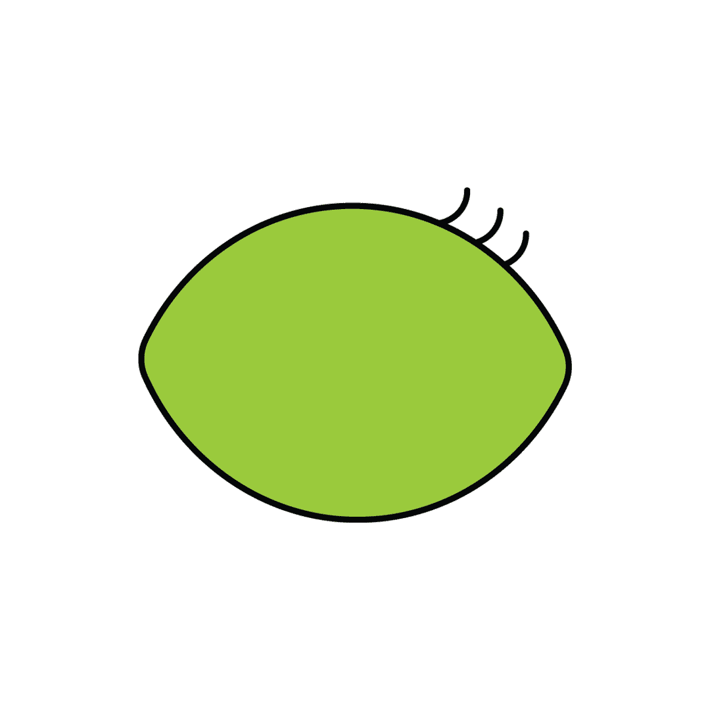
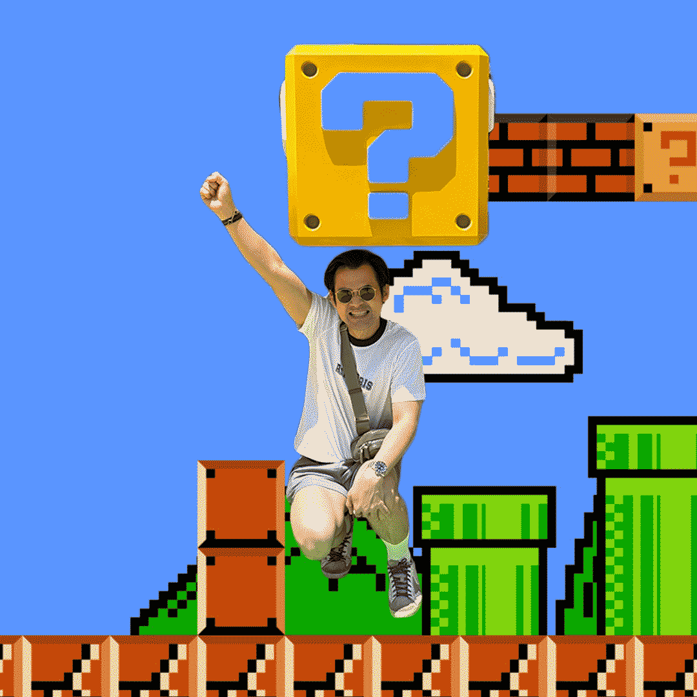

I picked the confused eye expression and playing with the eye ball, moving it left to right and made it more natural by put the action of closing eye
so it looks more realistic like a real eye confused and blinking

My friend he loves Mario, so I edit his photo and put in the Mario background like he is one of the player in the game.